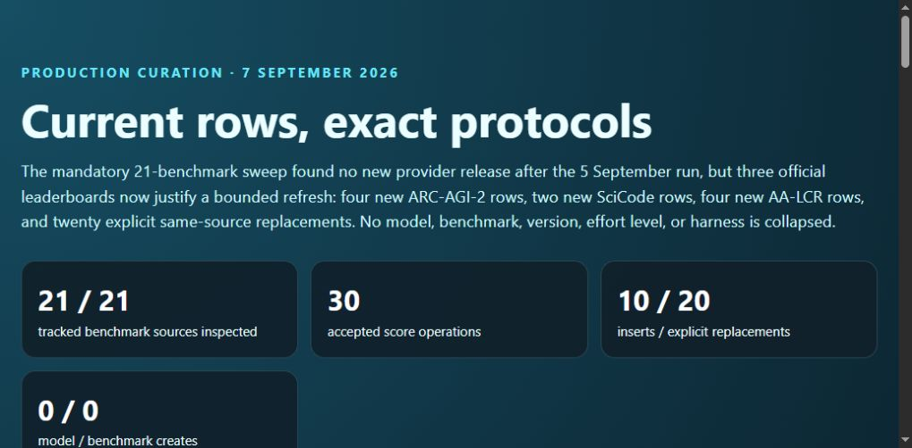
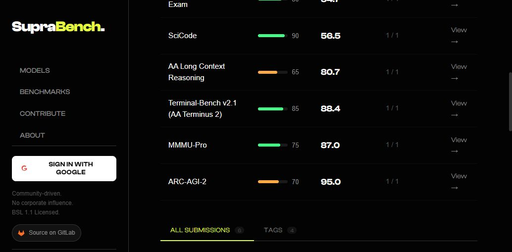
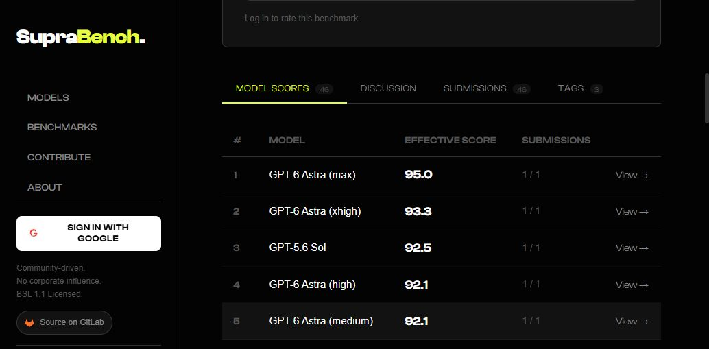
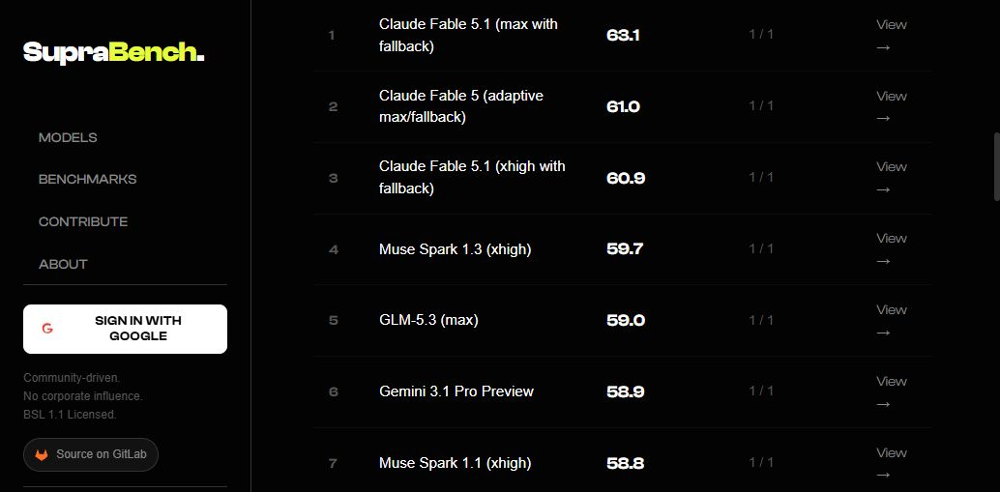
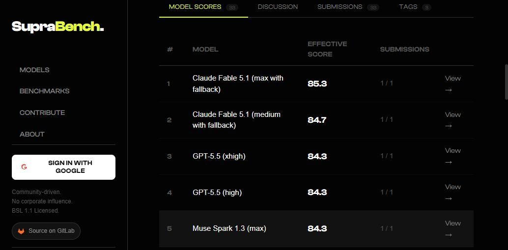
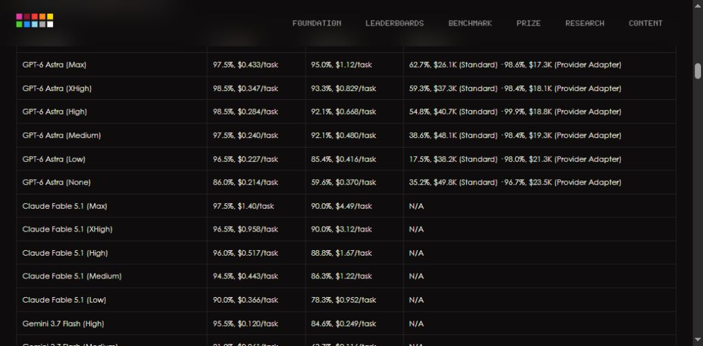
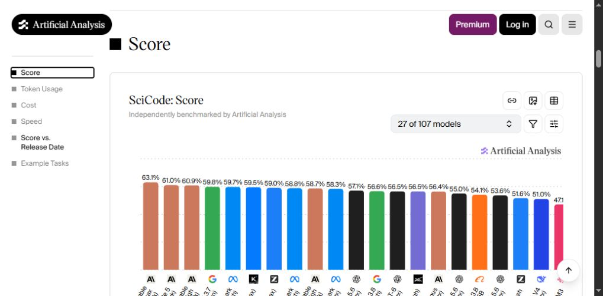
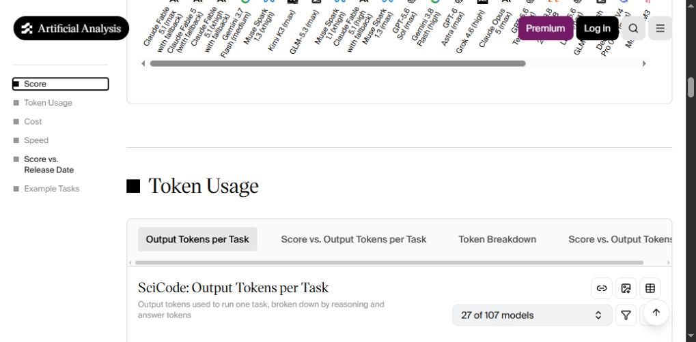
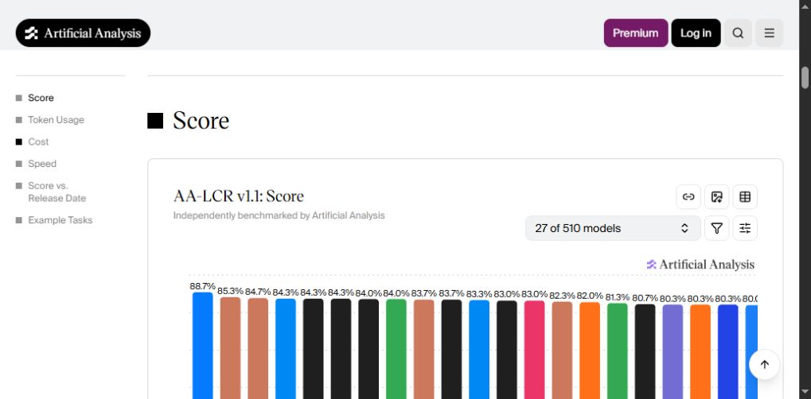
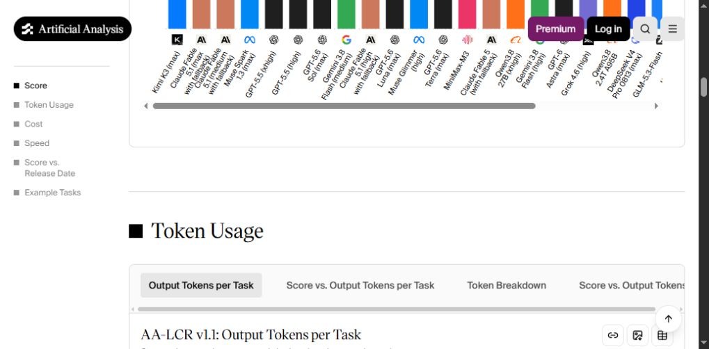

Production curation · 7 September 2026
Current rows, exact protocols
The mandatory 21-benchmark sweep found no new provider release after the 5 September run, but three official leaderboards now justify a bounded refresh: four new ARC-AGI-2 rows, two new SciCode rows, four new AA-LCR rows, and twenty explicit same-source replacements. No model, benchmark, version, effort level, or harness is collapsed.
Live publication evidence





Accepted changes
| Benchmark | Inserts | Replacements (old → new) | Protocol and stored scale |
|---|---|---|---|
| ARC-AGI-2 | GPT-6 Astra max 950; xhigh 933; high 921; medium 921 | None | Verified ARC Prize leaderboard; native percentages ×10 into 0–1000. ARC-AGI-3 values are not reused. |
| SciCode | Grok 4.6 high 565; GPT-5.6 Terra max 550 | Fable 5.1 max 620→631; Fable 5 adaptive max/fallback 602→610; Fable 5.1 xhigh 601→609; GLM-5.3 max 565→590; Muse Spark 1.1 xhigh 582→588; Fable 5.1 high 576→587; Sol max 561→571; Gemini 3.8 Flash high 536→566; Opus 5 Max 557→564; Luna max 525→536; GLM-5.3-Flash max 461→516; Qwen3.8 27B xhigh 447→466 | Artificial Analysis SciCode current chart; native percentages ×10 into 0–1000. |
| AA-LCR v1.1 | Fable 5.1 medium/fallback 847; Sol max 840; Fable 5.1 high/fallback 837; Terra max 830 | Fable 5.1 max 800→853; GPT-5.5 xhigh 743→843; GPT-5.5 high 733→843; Gemini 3.8 Flash medium 820→840; Luna max 783→837; Qwen3.8 27B xhigh 773→820; Gemini 3.8 Flash high 810→813; GLM-5.3-Flash max 780→800 | Artificial Analysis AA-LCR v1.1 current chart; native percentages ×10 into 0–1000. |
Visible source evidence





Deferred deliberately
| Candidate or source delta | Reason for no write |
|---|---|
| ARC-AGI-3 current Astra rows | The official table publishes both Standard and Provider Adapter harnesses for the same configurations. The existing benchmark identity cannot preserve that split. |
| Remaining AA-LCR revisions | Kimi K3 and several newer/lower rows need a separate source-identity migration or first-party model review; the current run uses the 30-score safety cap. |
| Remaining SciCode revisions | Kimi K3 uses a conflicting historical source; Gemini 3.7 medium, Inkling, Muse Glimmer, K2 Horizon, and Gemini 3.5 Flash-Lite need exact model records first. |
| APEX and HLE tail rows | Several configurations are new or materially revised, but exact model/source migrations should be handled in a dedicated bounded batch. |
| SWE-Bench Pro current top rows | GPT-5.4 xhigh and Muse Spark rows are valid leads, deferred only to keep this run within the reviewed score cap. |
| TextQuests source migration | The visible official table differs from older score provenance and does not expose every stored reasoning configuration explicitly enough for silent replacement. |
| DrugDiscoveryBench | Scientifically relevant and expert-curated, but the headline leaderboard mixes mini-SWE-agent and Gemini CLI harnesses; adoption and protocol identity need review. |
| SWE Atlas suite | Promising real-repository coverage, but its refactoring, test-generation, and codebase-Q&A tracks are correlated and need an explicit suite-weighting decision. |
| HiL-Bench and MCP Atlas | Both are useful agent-evaluation leads; public task/evaluator reproducibility and retry/judge protocol must be pinned before admission. |
Complete tracked-benchmark sweep
Every production benchmark source was opened and its current top rows compared against the complete 170-model production inventory: AA-LCR, Agents' Last Exam, APEX, ARC-AGI-2, ARC-AGI-3, DeepSWE, EnigmaEval, ERQA, Humanity's Last Exam, IntPhys 2, MindCube, MMMU-Pro, SciCode, SkateBench, SpatialViz, SWE-Bench Pro, SWE-bench Verified, Tau2-Bench Telecom, Terminal-Bench Hard, Terminal-Bench v2.1, and TextQuests.
The independent provider sweep covered OpenAI, Anthropic, Google, xAI, Z.ai, Qwen, DeepSeek, Moonshot, Meta, MiniMax, Mistral, Cohere, and AI21. No applicable model release newer than the 5 September curation was found.
Validation and publication
- The pre-write
example.comviewport screenshot gate passed. - Manifest validation passed with 35 sources, 5 visible-browser evidence images, and exactly 30 score operations.
- All 139 tests passed;
git diff --checkand the report credential-pattern scan passed. - The reviewed pre-apply dry-run predicted exactly 10 inserts and 20 explicit replacements, with no model or benchmark create.
- The single production apply mirrored all 30 operations; the post-apply dry-run reports all 30 unchanged and no pending write.
- Mirror state advanced from Convex/D1 646/646 to 656/656 with drift 0.
- The report returned HTTP 200 from Cloudflare, and its cache-busted visible-browser render matched the run identity and counts.
- All 22 affected model pages and all 3 affected benchmark pages loaded with their exact headings in the visible browser; representative score-table screenshots are stored above.
All sources
- ARC Prize verified leaderboards
- ARC-AGI-3 competition
- Agents' Last Exam
- APEX-Agents-AA
- DeepSWE v1.1
- EnigmaEval
- ERQA
- Humanity's Last Exam
- IntPhys 2
- MindCube
- MMMU-Pro
- SciCode
- SkateBench v2
- SpatialViz
- SWE-Bench Pro
- SWE-bench Verified
- Tau2-Bench
- Terminal-Bench Hard
- Terminal-Bench v2.1
- TextQuests
- AA-LCR
- OpenAI news
- Anthropic news
- Google AI
- xAI news
- Z.ai
- Qwen
- DeepSeek updates
- Moonshot AI
- Meta AI
- MiniMax
- Mistral
- Cohere
- AI21
- Scale Labs benchmark overview
- Published curation report
- GPT-6 Astra max live page
- ARC-AGI-2 live page
- SciCode live page
- AA-LCR live page
Run learnings
- ARC-AGI-3 needs a harness-aware identity before importing current Standard or Provider Adapter rows.
- Established Artificial Analysis rows can shift materially between scheduled runs; same-source replacement review is required even without a provider launch.
- DrugDiscoveryBench and SWE Atlas should be revisited only with an explicit harness and suite-weighting decision.
- The next run should prioritize the deferred APEX/HLE/SWE-Pro rows and source migrations rather than rechecking this completed batch.